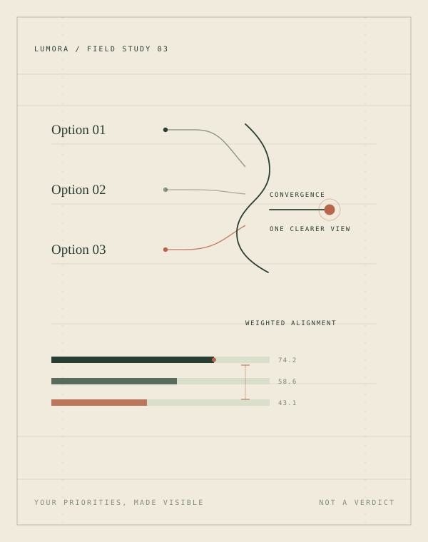

A quiet tool for consequential choices
Too many possibilities. Find your clarity.
Not every good option is right for you. Make room for what matters, compare the trade-offs honestly, and move forward with intention.
- Options
- 2–4
- Priorities
- 1–5
- Ratings
- 0–10
How it works
Structure first.
Then perspective.
A decision feels heavy when everything is tangled together. LUMORA separates the pieces — then shows you how they combine.
-
01 Frame
Lay out your options.
Name the real choices in front of you — from two to four — and describe what each one actually means.
-
02 Weight
Define what matters.
Give each criterion an importance from 1 to 5. A high weight tells the model that a small difference there matters more.
-
03 Read
Discover your trade-offs.
See the weighted scores, the criteria doing the most work, and where your options gain or give ground.

CLARITY REPORT Weighted alignment
Illustrative example Not advice
Which way
to study?
Three plausible paths, four priorities, and a different answer depending on what you value. Move the priorities and watch the logic change.
Your workspace
Your thinking,
kept close.
Decisions live in this browser, not on a server. Pick up where you left off, duplicate a path, or start somewhere new.
Open the libraryContact
A quiet line
to us.
Questions, ideas, or just a thought? Choose a message below and let's start a conversation.
Each message opens WhatsApp with the text already filled in. You can edit it and press Send yourself.
The next clear step
Turn uncertainty
into clarity.
Not saved yet
Step 01 / Frame
Frame the decision.
Give the choice a name, lay out your options, and decide what deserves weight.
Step 02 / Rate
Rate with intention.
Score how each option performs against each criterion. Higher is always more favourable — for cost, 10 means most affordable.
Local library
Saved decisions.
Comparisons you chose to keep. They stay in this browser and do not sync across devices.